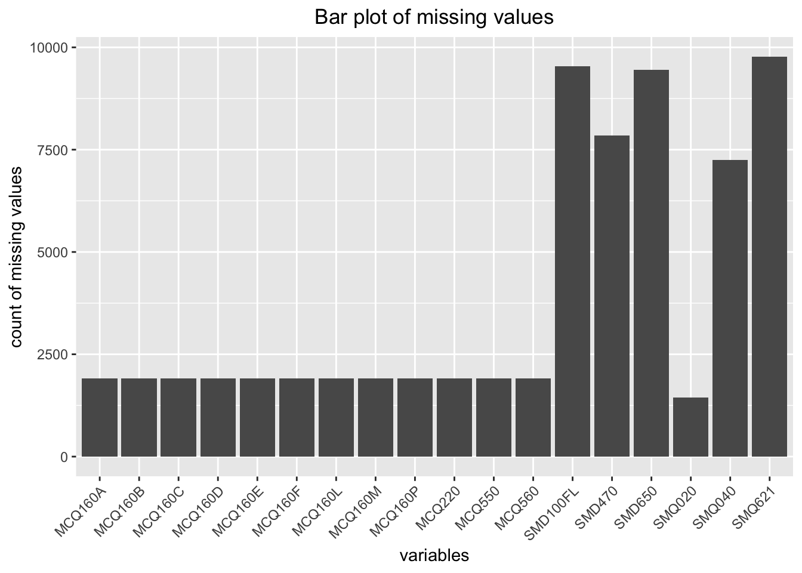
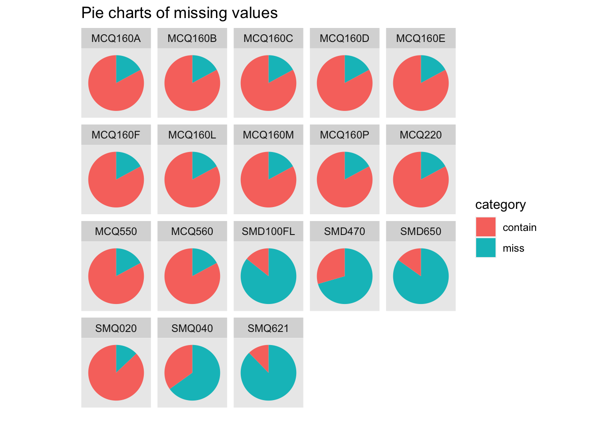

Attaching package: 'dplyr'The following objects are masked from 'package:stats':
filter, lagThe following objects are masked from 'package:base':
intersect, setdiff, setequal, union
Attaching package: 'dplyr'The following objects are masked from 'package:stats':
filter, lagThe following objects are masked from 'package:base':
intersect, setdiff, setequal, unionIn this project we download data from CDC-National Health and Nutrition Examination Survey(NHANES). This dataset is constructed by CDC, Centers for Disease Control and Prevention. NHANES is a major project of the National Center for Health Statistics (part of the CDC), and became a continuous project since 1999. The survey upadtes every year and contains records from 5000 people national wide.
We focus on the three questionnaire: Smoking - Cigarette Use, Smoking - Household Smokers, and Medical Conditions. Due to the Covid-19, data from cycle 2019-2020 is not completed and thus the department combine 2017-2018 with 2019-2020 to form a new version of data from 2017-2020, which is the latest version of data. We use this cycle given the great amount of records it provides.
This is how the data looks like:
#read data
households <- read_xpt('data/households.XPT',
col_select = c('SEQN', 'SMD470'))
medical <- read_xpt('data/medical.XPT',
col_select = c('SEQN', 'MCQ010', 'MCQ092', 'MCQ160A',
'MCQ160B', 'MCQ160C', 'MCQ160D', 'MCQ160E',
'MCQ160F', 'MCQ160M', 'MCQ160P', 'MCQ160L',
'MCQ550', 'MCQ560', 'MCQ220'))
smoke <- read_xpt('data/smoke.XPT',
col_select = c('SEQN', 'SMQ020', 'SMQ040', 'SMD650',
'SMD100FL', 'SMQ621'))
data <- merge(households, smoke, by = 'SEQN')
data <- merge(data, medical, by = 'SEQN')
head(data) SEQN SMD470 SMQ020 SMQ040 SMD650 SMD100FL SMQ621 MCQ010 MCQ092 MCQ160A
1 109264 NA NA NA NA NA 1 2 2 NA
2 109266 NA 2 NA NA NA NA 2 9 2
3 109267 NA 2 NA NA NA NA 2 2 2
4 109268 NA 2 NA NA NA NA 2 2 NA
5 109271 2 1 1 20 NA NA 1 2 1
6 109273 0 1 1 15 1 NA 2 2 2
MCQ160B MCQ160C MCQ160D MCQ160E MCQ160F MCQ160M MCQ160P MCQ160L MCQ550 MCQ560
1 NA NA NA NA NA NA NA NA NA NA
2 2 2 2 2 2 2 2 2 2 2
3 2 2 2 2 2 2 2 2 2 2
4 NA NA NA NA NA NA NA NA NA NA
5 2 2 2 2 2 2 1 2 2 2
6 2 2 2 2 2 2 2 2 2 2
MCQ220
1 NA
2 2
3 2
4 NA
5 2
6 2The Description of each variable is as below:
| Index | Variable Description |
|---|---|
| SEQN | Respondent sequence number |
| SMD470 | # of people who smoke inside this home |
| SMQ020 | Smoked at least 100 cigarettes in life |
| SMQ040 | Do you now smoke cigarettes? |
| SMD650 | Avg # cigarettes/day during past 30 days |
| SMD100FL | Cigarette Filter type |
| SMQ621 | Cigarettes smoked in entire life |
| MCQ010 | Ever been told you have asthma |
| MCQ092 | Ever receive blood transfusion |
| MCQ160A | Doctor ever said you had arthritis |
| MCQ160B | Ever told had heart failure |
| MCQ160C | Ever told had coronary heart disease |
| MCQ160D | Ever told had angina/angina pectoris |
| MCQ160E | Ever told had heart attack |
| MCQ160F | Ever told you had a stroke |
| MCQ160M | Ever told you had thyroid problem |
| MCQ160P | Ever told you had COPD, emphysema, ChB |
| MCQ160L | Ever told you had any liver condition |
| MCQ550 | Has DR ever said you have gallstones |
| MCQ560 | Ever had gallbladder surgery |
| MCQ220 | Ever told you had cancer or malignancy |
We would like to use SMQ020-SMQ621 to reflect the personal smoking status and MCQ010-MCQ220 to indicate the personal health status, which contains doctor diagnoses to diverse types of diseases. We would also like to include SMD470 as a reflect of secondhand smoke exposure to find if there is any possibility that secondhand smoke exposure has effect to health.
We would like to start with a classic question: the effect of smoking to health. This question has been studied for years and has several well-known results like smoking will increase the risk for lung cancer. In out study, we would like examine the influence of smoking to health condition comprehensively, including its effect to heart, liver, etc. We are especially interested in discovering the relation between smoking to health problems that are not thought to be related to smoking in general.
To achieve this goal, we would like to use various visualization method including mosaic plot and histogram by condition to see if there are any apparant relations. We also want to use pearson correlation with heatmap visualization to measure the relation between smoking to different health benchmarks.
After this, we plan to find the effect of secondhand smoke exposure to health conditions. Secondhand smoke exposure is nowadays a common phenomenon, but people tend to oversee this problem compared to the direct influence by cigarette. Therefore, we would like to repeat the procedure as before but change the smoking variable to secondhand smoke exposure to find its possible effect to one’s health condition.
This number of missing values for each variable is as below:
count <- nrow(data)
missing <- data %>%
gather(key = "key", value = "val") %>%
mutate(is.missing = is.na(val)) %>%
group_by(key, is.missing) %>%
summarise(num.missing = n()) %>%
filter(is.missing==T) %>%
select(-is.missing) %>%
arrange(desc(num.missing)) %>%
mutate(num.contain = count - num.missing)`summarise()` has grouped output by 'key'. You can override using the `.groups`
argument.We use a histogram and pie charts to visualize the missing values:
ggplot(missing) + geom_bar(aes(x = key, y = num.missing), stat = 'identity') +
labs(x = 'variables', y = 'count of missing values', title = 'Bar plot of missing values') +
theme(axis.text.x = element_text(angle = 45, hjust = 1))
count <- length(missing$num.missing)
pie <- data.frame('value' = c(missing$num.missing, missing$num.contain),
'category' = c(rep('miss', count), rep('contain', count)),
'variable' = c(rep(missing$key, 2)))
ggplot(pie, aes(x = '', y = value, fill = category)) + geom_col() +
coord_polar(theta = 'y', start = 0) + facet_wrap(~variable) +
labs(x = '', y = '', title = 'Pie charts of missing values') +
theme(axis.text = element_blank(),
axis.ticks = element_blank(),
panel.grid = element_blank())
We can see that there are a fixed number of missing values for a bunch of medical variables (MCQ160A - MCQ220). Since we have about 10k data in total and 1905 is not a big number, we choose to delete these records.
data <- data %>%
drop_na(c('MCQ160A', 'MCQ160B', 'MCQ160C', 'MCQ160D', 'MCQ160E', 'MCQ160F',
'MCQ160M', 'MCQ160P', 'MCQ160L', 'MCQ550', 'MCQ560', 'MCQ220'))Regarding the smoking status variables, we decide to drop SMD650, SMD100FL, and SMQ621 variables since there are too many missing values. For the rest of the data we drop any row contain NAs.
data <- data %>%
select(-c('SMD650', 'SMD100FL', 'SMQ621')) %>%
drop_na()head(data) SEQN SMD470 SMQ020 SMQ040 MCQ010 MCQ092 MCQ160A MCQ160B MCQ160C MCQ160D
1 109271 2 1 1 1 2 1 2 2 2
2 109273 0 1 1 2 2 2 2 2 2
3 109307 0 1 3 2 2 2 2 2 1
4 109323 0 1 3 2 2 2 2 2 2
5 109334 0 1 1 2 2 2 2 2 2
6 109342 2 1 1 2 2 1 2 2 2
MCQ160E MCQ160F MCQ160M MCQ160P MCQ160L MCQ550 MCQ560 MCQ220
1 2 2 2 1 2 2 2 2
2 2 2 2 2 2 2 2 2
3 2 2 2 2 2 2 2 2
4 2 2 2 2 2 2 2 2
5 2 2 2 2 2 2 2 2
6 2 2 1 2 2 2 1 2print(paste('There are ', nrow(data), ' records in total.'))[1] "There are 1829 records in total."The result data looks clean now. We have 1829 records in total, which is a sufficient amount.